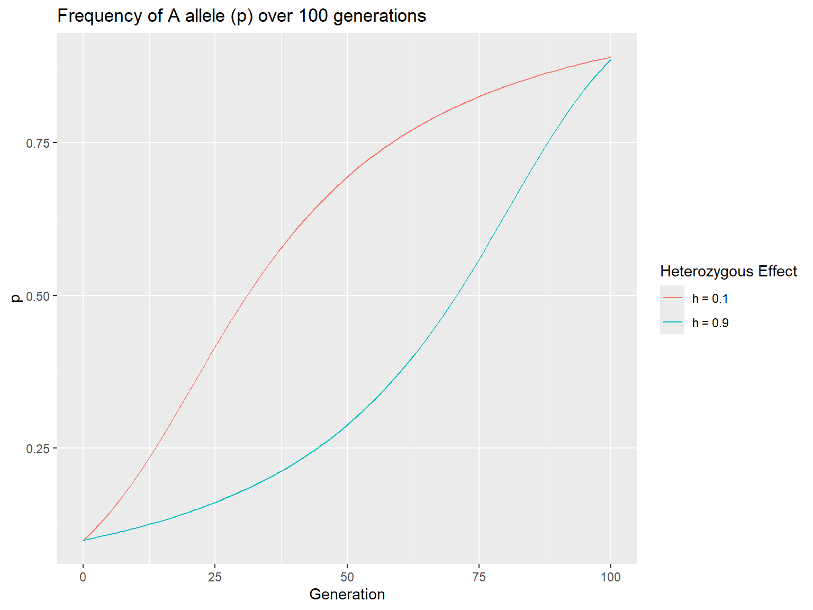
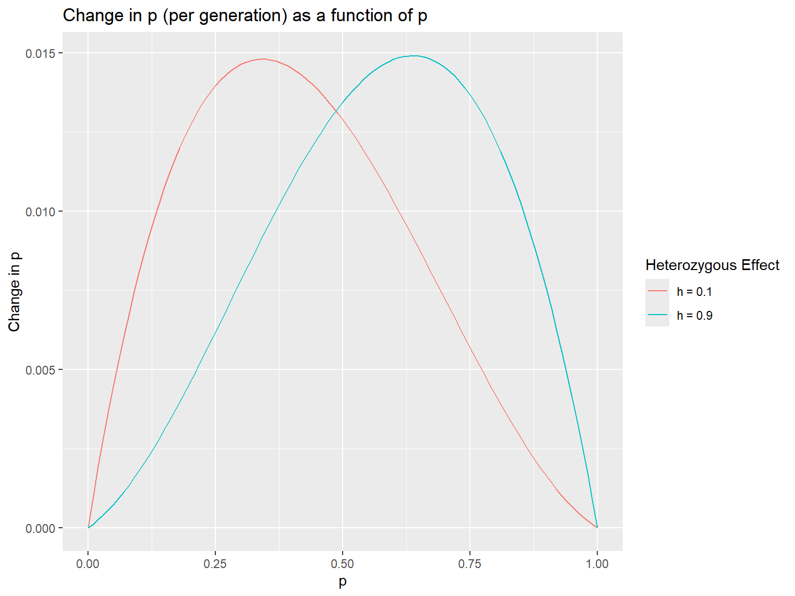

#package load chunk
library(tidyverse)Homework #3
Question 1
Consider the setting of directional selection, as discussed in Lecture 11. Recall that in lecture, we looked at graphs of versus the allele frequency for the case in which 𝑠=0.1and ℎ=0.5.
a. Use the learnPopGen package (or use your own code) to plot Δ𝑝 for 𝑠=0.1 with ℎ=0.1 and with ℎ=0.9.delta_p = function(p_0,s,h){
q = 1 - p_0
numer = p_0*q*s*(p_0*h+q*(1-h))
denom = 1-2*p_0*q*h*s-(q^2)*s
return(numer/denom)
}
pop.select <- data.frame(gen = seq(0,100,1),
h_01 = numeric(101),
h_09 = numeric(101))
pop.select$h_01[1] = 0.1
pop.select$h_09[1] = 0.1
for(i in 2:101){
pop.select$h_01[i] = pop.select$h_01[i-1] + delta_p(pop.select$h_01[i-1], 0.1, 0.1)
pop.select$h_09[i] = pop.select$h_09[i-1] + delta_p(pop.select$h_09[i-1], 0.1, 0.9)
}
ggplot(data = pop.select, mapping = aes(x = gen, y = h_01)) +
geom_line(aes(colour = "h = 0.1"))+
geom_line(mapping = aes(x = gen, y = h_09, colour = "h = 0.9")) +
ylab("p") +
xlab("Generation") +
labs(title = "Frequency of A allele (p) over 100 generations", color = "Heterozygous Effect")
p_vec = seq(0,1,0.01)
delta_p_01 = delta_p(p_vec, 0.1, 0.1)
delta_p_09 = delta_p(p_vec, 0.1, 0.9)
ggplot(mapping = aes(x = p_vec, y = delta_p_01)) +
geom_line(aes(colour = "h = 0.1"))+
geom_line(mapping = aes(x = p_vec, y = delta_p_09, colour = "h = 0.9")) +
ylab("Change in p") +
xlab("p") +
labs(title = "Change in p (per generation) as a function of p", color = "Heterozygous Effect")
b. Explain how the degree of dominance affects directional selection.Answer: When in incomplete dominance, a lower value for h results in a quicker initial increase in p, so the frequency of ‘A’ will increase faster when it is not common in the population. A higher value of h results in a faster increase in p when ‘A’ is already more common in the population.
Question 2
If the fitnesses of the genotypes AA, Aa, and aa are 1.5, 1.1, and 1.0, respectively, what are the values of the selection coefficient and the heterozygous effect?
fit_dom = 1.5
fit_het = 1.1
fit_rec = 1.0
w_dom = fit_dom/fit_dom
w_het = fit_het/fit_dom
w_rec = fit_rec/fit_dom
sel = 1 - w_rec
het = (1 - w_het)/sel
sel[1] 0.3333333het[1] 0.8The selection coefficient is 0.333 and the heterozygous effect is 0.8.
Question 3
Suppose that the relative fitnesses of three genotypes A1A1, A1A2, and A2A2 are 1.0, 0.9, and 0.8 respectively. What can you infer about dominance at this locus?
Answer: A1A1 is the most fit genotype, but there is incomplete dominance (the heterozygotes is more fit than the least-fit homozygote).
Question 4
In Drosophila melanogaster, curly wings occur due to a dominant allele Cy that is lethal when homozygous. A population is established with an initial frequency of Cy equal to 0.168. Calculate the expected frequency in the next generation assuming:
- that the relative fitness of +/+ : Cy/+ is 1:1
p = 1 - 0.168
freq_Cy = 0.168 - delta_p(p, 1, 0) #selection coefficient is 1, because Cy/Cy has a relative fitness of zero. Because of this, heterozygous effect is simply equal to 1 - [heterozygote relative fitness]
freq_Cy[1] 0.1438356- that the relative fitness of +/+ : Cy/+ is 1:0.5
p = 1 - 0.168
freq_Cy = 0.168 - delta_p(p, 1, 0.5)
freq_Cy[1] 0.084Question 5
An allele exists in a population at a frequency of 0.2. What is its probability of fixation if genetic drift is the only force acting on this population?
Answer: Its probability of fixation is equal to its initial frequency, 0.2.
Question 6
In a species of wren, the allele frequency of the ‘p’ allele is 0.7 on the mainland United States. The frequency of this same allele is 0.2 on an island in Lake Erie. The island population, which consists of a population of size 85, receives 3 migrants per generation from the mainland. How does the frequency of ‘p’ change in one generation?
island_p = 85 * 0.2
migrate_p = 3 * 0.7
new_freq = (island_p+migrate_p)/88
new_freq #calculated by weighting allele frequencies by the number of individuals (i think this assumes the population size increases to 88 in the next gen). This is satisfyingly close to the result of the proper calculation[1] 0.2170455pt0 = 0.2
pf = 0.7
m = 3/85
p_t = pf + (pt0 - pf)*(1 - m)^1
p_t #calculated using the founder model equation from lecture 6[1] 0.2176471Answer: The ‘p’ allele should increase in frequency by ~0.017 in one generation.
Question 7
What is the neutral theory of evolution? Referring to the papers we discussed, explain in your own words what evidence Kern and Hahn (2018) provided against this theory. Outline the response to Kern and Hahn provided by Jensen et al. (2018). You may not use AI for this problem. Your response should be 1-2 paragraphs in length.
Answer:
The neutral theory of evolution argues that most genetic differences between species are due to mutations that are effectively neutral (are not strongly selected for or against). The argument for this theory posits that, given the expected rate of mutations across the whole genome, the presence of selectively positive mutations is in the minority. Kern and Hahn present a few arguments against this idea, leading with the claim that Kimura’s initial estimate of protein-coding sites was drastically high. They follow by referencing studies that claim nearly 50% of mutations are fixed by selection in some Drosophila species. They also argue that, due to recombination, non-coding loci that reside near protein-coding sites are subject to the selection which acts on those protein-coding sites. Kern and Hahn argue that selective sweeps will fix selected-for mutations and thereby fix any present mutations on nearby loci, removing variation.
Jensen et al. respond by pointing out that the results on selection in Drosophila are uncertain, and that they only concern themselves with protein-coding portion of DNA. They also refute Kern and Hahn’s claims about how closely linked non-coding loci are to protein-coding loci, pointing out that very few species have been studied in this regard. Jensen et al. claim that the mutagenic nature of recombination itself can also skew and obscure these results. Regardless, they state that current evidence still shows a very low rate of mutation in protein-coding regions. The response closes with Jensen et al’s proposal of how Neutral Theory was intended to be interpreted, pointing out that its final form is still in progress, and their belief that it still serves as a primary and crucial basis for molecular genetic research.